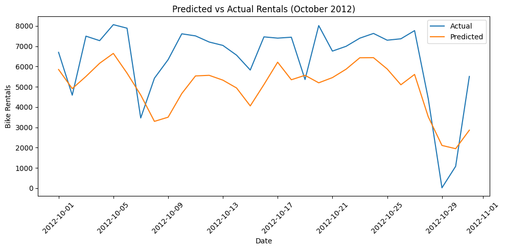
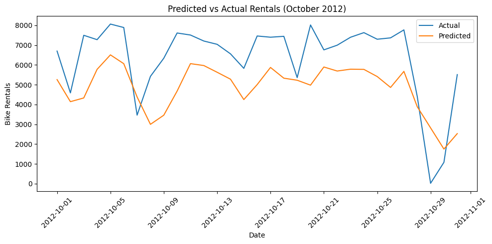

import pandas as pd
import tensorflow as tf
from tensorflow import keras
from tensorflow.keras import layers
bikes = pd.read_csv('https://raw.githubusercontent.com/byui-cse/cse450-course/master/data/bikes.csv')!pip install -U tensorflowRequirement already satisfied: tensorflow in /usr/local/lib/python3.11/dist-packages (2.19.0)
Requirement already satisfied: absl-py>=1.0.0 in /usr/local/lib/python3.11/dist-packages (from tensorflow) (1.4.0)
Requirement already satisfied: astunparse>=1.6.0 in /usr/local/lib/python3.11/dist-packages (from tensorflow) (1.6.3)
Requirement already satisfied: flatbuffers>=24.3.25 in /usr/local/lib/python3.11/dist-packages (from tensorflow) (25.2.10)
Requirement already satisfied: gast!=0.5.0,!=0.5.1,!=0.5.2,>=0.2.1 in /usr/local/lib/python3.11/dist-packages (from tensorflow) (0.6.0)
Requirement already satisfied: google-pasta>=0.1.1 in /usr/local/lib/python3.11/dist-packages (from tensorflow) (0.2.0)
Requirement already satisfied: libclang>=13.0.0 in /usr/local/lib/python3.11/dist-packages (from tensorflow) (18.1.1)
Requirement already satisfied: opt-einsum>=2.3.2 in /usr/local/lib/python3.11/dist-packages (from tensorflow) (3.4.0)
Requirement already satisfied: packaging in /usr/local/lib/python3.11/dist-packages (from tensorflow) (24.2)
Requirement already satisfied: protobuf!=4.21.0,!=4.21.1,!=4.21.2,!=4.21.3,!=4.21.4,!=4.21.5,<6.0.0dev,>=3.20.3 in /usr/local/lib/python3.11/dist-packages (from tensorflow) (5.29.5)
Requirement already satisfied: requests<3,>=2.21.0 in /usr/local/lib/python3.11/dist-packages (from tensorflow) (2.32.3)
Requirement already satisfied: setuptools in /usr/local/lib/python3.11/dist-packages (from tensorflow) (75.2.0)
Requirement already satisfied: six>=1.12.0 in /usr/local/lib/python3.11/dist-packages (from tensorflow) (1.17.0)
Requirement already satisfied: termcolor>=1.1.0 in /usr/local/lib/python3.11/dist-packages (from tensorflow) (3.1.0)
Requirement already satisfied: typing-extensions>=3.6.6 in /usr/local/lib/python3.11/dist-packages (from tensorflow) (4.14.0)
Requirement already satisfied: wrapt>=1.11.0 in /usr/local/lib/python3.11/dist-packages (from tensorflow) (1.17.2)
Requirement already satisfied: grpcio<2.0,>=1.24.3 in /usr/local/lib/python3.11/dist-packages (from tensorflow) (1.72.1)
Requirement already satisfied: tensorboard~=2.19.0 in /usr/local/lib/python3.11/dist-packages (from tensorflow) (2.19.0)
Requirement already satisfied: keras>=3.5.0 in /usr/local/lib/python3.11/dist-packages (from tensorflow) (3.8.0)
Requirement already satisfied: numpy<2.2.0,>=1.26.0 in /usr/local/lib/python3.11/dist-packages (from tensorflow) (2.0.2)
Requirement already satisfied: h5py>=3.11.0 in /usr/local/lib/python3.11/dist-packages (from tensorflow) (3.13.0)
Requirement already satisfied: ml-dtypes<1.0.0,>=0.5.1 in /usr/local/lib/python3.11/dist-packages (from tensorflow) (0.5.1)
Requirement already satisfied: tensorflow-io-gcs-filesystem>=0.23.1 in /usr/local/lib/python3.11/dist-packages (from tensorflow) (0.37.1)
Requirement already satisfied: wheel<1.0,>=0.23.0 in /usr/local/lib/python3.11/dist-packages (from astunparse>=1.6.0->tensorflow) (0.45.1)
Requirement already satisfied: rich in /usr/local/lib/python3.11/dist-packages (from keras>=3.5.0->tensorflow) (13.9.4)
Requirement already satisfied: namex in /usr/local/lib/python3.11/dist-packages (from keras>=3.5.0->tensorflow) (0.1.0)
Requirement already satisfied: optree in /usr/local/lib/python3.11/dist-packages (from keras>=3.5.0->tensorflow) (0.16.0)
Requirement already satisfied: charset-normalizer<4,>=2 in /usr/local/lib/python3.11/dist-packages (from requests<3,>=2.21.0->tensorflow) (3.4.2)
Requirement already satisfied: idna<4,>=2.5 in /usr/local/lib/python3.11/dist-packages (from requests<3,>=2.21.0->tensorflow) (3.10)
Requirement already satisfied: urllib3<3,>=1.21.1 in /usr/local/lib/python3.11/dist-packages (from requests<3,>=2.21.0->tensorflow) (2.4.0)
Requirement already satisfied: certifi>=2017.4.17 in /usr/local/lib/python3.11/dist-packages (from requests<3,>=2.21.0->tensorflow) (2025.4.26)
Requirement already satisfied: markdown>=2.6.8 in /usr/local/lib/python3.11/dist-packages (from tensorboard~=2.19.0->tensorflow) (3.8)
Requirement already satisfied: tensorboard-data-server<0.8.0,>=0.7.0 in /usr/local/lib/python3.11/dist-packages (from tensorboard~=2.19.0->tensorflow) (0.7.2)
Requirement already satisfied: werkzeug>=1.0.1 in /usr/local/lib/python3.11/dist-packages (from tensorboard~=2.19.0->tensorflow) (3.1.3)
Requirement already satisfied: MarkupSafe>=2.1.1 in /usr/local/lib/python3.11/dist-packages (from werkzeug>=1.0.1->tensorboard~=2.19.0->tensorflow) (3.0.2)
Requirement already satisfied: markdown-it-py>=2.2.0 in /usr/local/lib/python3.11/dist-packages (from rich->keras>=3.5.0->tensorflow) (3.0.0)
Requirement already satisfied: pygments<3.0.0,>=2.13.0 in /usr/local/lib/python3.11/dist-packages (from rich->keras>=3.5.0->tensorflow) (2.19.1)
Requirement already satisfied: mdurl~=0.1 in /usr/local/lib/python3.11/dist-packages (from markdown-it-py>=2.2.0->rich->keras>=3.5.0->tensorflow) (0.1.2)# --- Imports ---
import pandas as pd
import numpy as np
import matplotlib.pyplot as plt
from sklearn.preprocessing import StandardScaler
from sklearn.metrics import mean_squared_error, r2_score
from tensorflow.keras.models import Sequential
from tensorflow.keras.layers import Dense, Dropout
from tensorflow.keras.callbacks import EarlyStopping
# Load data
bikes = pd.read_csv('https://raw.githubusercontent.com/byui-cse/cse450-course/master/data/bikes.csv')import tensorflow as tf
print(tf.__version__)2.19.0
# --- Load and Prepare Data ---
bikes = pd.read_csv('https://raw.githubusercontent.com/byui-cse/cse450-course/master/data/bikes.csv')
# Parse date
bikes['dteday'] = pd.to_datetime(bikes['dteday'])
# Group to daily level
daily = bikes.groupby('dteday').agg({
'temp_c': 'mean',
'feels_like_c': 'mean',
'hum': 'mean',
'windspeed': 'mean',
'holiday': 'first',
'workingday': 'first',
'season': 'first',
'weathersit': 'mean',
'casual': 'sum',
'registered': 'sum'
}).reset_index()
# Create target variable
daily['count'] = daily['casual'] + daily['registered']
# Time features
daily['day_of_week'] = daily['dteday'].dt.dayofweek
daily['month'] = daily['dteday'].dt.month
daily['is_weekend'] = daily['day_of_week'].isin([5, 6]).astype(int)
# Cyclical encoding
daily['day_sin'] = np.sin(2 * np.pi * daily['day_of_week'] / 7)
daily['day_cos'] = np.cos(2 * np.pi * daily['day_of_week'] / 7)
daily['month_sin'] = np.sin(2 * np.pi * daily['month'] / 12)
daily['month_cos'] = np.cos(2 * np.pi * daily['month'] / 12)
# Lag and rolling features
daily['lag_1'] = daily['count'].shift(1)
daily['lag_7'] = daily['count'].shift(7)
daily['rolling_mean_3'] = daily['count'].rolling(window=3).mean().shift(1)
daily['rolling_mean_7'] = daily['count'].rolling(window=7).mean().shift(1)
daily.dropna(inplace=True)
daily.reset_index(drop=True, inplace=True)
# One-hot encode categorical variables
daily = pd.get_dummies(daily, columns=['season', 'holiday', 'workingday'], drop_first=True)
# --- Separate Modeling for Casual and Registered Users ---
features = [col for col in daily.columns if col not in ['dteday', 'casual', 'registered', 'count']]
train_bikes = daily[daily['dteday'] < '2012-10-01']
test_bikes = daily[(daily['dteday'] >= '2012-10-01') & (daily['dteday'] <= '2012-10-31')]
X_train = train_bikes[features]
X_test = test_bikes[features]
# --- Model for Casual Users ---
scaler_casual = StandardScaler()
X_train_scaled_casual = scaler_casual.fit_transform(X_train)
X_test_scaled_casual = scaler_casual.transform(X_test)
y_train_casual = train_bikes['casual']
y_test_casual = test_bikes['casual']
model_casual = Sequential([
Dense(128, activation='relu', input_shape=(X_train.shape[1],)),
Dropout(0.2),
Dense(64, activation='relu'),
Dense(1)
])
model_casual.compile(optimizer='adam', loss='mse')
early_stop = EarlyStopping(monitor='val_loss', patience=10, restore_best_weights=True)
model_casual.fit(X_train_scaled_casual, y_train_casual, validation_split=0.2, epochs=200, callbacks=[early_stop], verbose=0)
# --- Model for Registered Users ---
scaler_registered = StandardScaler()
X_train_scaled_reg = scaler_registered.fit_transform(X_train)
X_test_scaled_reg = scaler_registered.transform(X_test)
y_train_registered = train_bikes['registered']
y_test_registered = test_bikes['registered']
model_registered = Sequential([
Dense(128, activation='relu', input_shape=(X_train.shape[1],)),
Dropout(0.2),
Dense(64, activation='relu'),
Dense(1)
])
model_registered.compile(optimizer='adam', loss='mse')
model_registered.fit(X_train_scaled_reg, y_train_registered, validation_split=0.2, epochs=200, callbacks=[early_stop], verbose=0)
# --- Combined Predictions ---
pred_casual = model_casual.predict(X_test_scaled_casual).flatten()
pred_registered = model_registered.predict(X_test_scaled_reg).flatten()
pred_total = pred_casual + pred_registered
y_true = test_bikes['count']
mse = mean_squared_error(y_true, pred_total)
rmse = np.sqrt(mse)
r2 = r2_score(y_true, pred_total)
print(f"Mean Squared Error (MSE): {mse:.2f}")
print(f"Root Mean Squared Error (RMSE): {rmse:.2f}")
print(f"R-squared Score (R²): {r2:.4f}")
# --- Save & Plot ---
results = test_bikes[['dteday']].copy()
results['predicted_count'] = pred_total
results['actual_count'] = y_true.values
results.to_csv('bike_predictions_split_model.csv', index=False)
plt.figure(figsize=(10, 5))
plt.plot(results['dteday'], results['actual_count'], label='Actual')
plt.plot(results['dteday'], results['predicted_count'], label='Predicted')
plt.xlabel('Date')
plt.ylabel('Bike Rentals')
plt.title('Predicted vs Actual Rentals (October 2012)')
plt.legend()
plt.xticks(rotation=45)
plt.tight_layout()
plt.show()/usr/local/lib/python3.11/dist-packages/keras/src/layers/core/dense.py:87: UserWarning: Do not pass an `input_shape`/`input_dim` argument to a layer. When using Sequential models, prefer using an `Input(shape)` object as the first layer in the model instead.
super().__init__(activity_regularizer=activity_regularizer, **kwargs)
/usr/local/lib/python3.11/dist-packages/keras/src/layers/core/dense.py:87: UserWarning: Do not pass an `input_shape`/`input_dim` argument to a layer. When using Sequential models, prefer using an `Input(shape)` object as the first layer in the model instead.
super().__init__(activity_regularizer=activity_regularizer, **kwargs)1/1 ━━━━━━━━━━━━━━━━━━━━ 0s 76ms/step 1/1 ━━━━━━━━━━━━━━━━━━━━ 0s 67ms/step Mean Squared Error (MSE): 3229138.25 Root Mean Squared Error (RMSE): 1796.98 R-squared Score (R²): 0.1000

WARNING:tensorflow:5 out of the last 5 calls to <function TensorFlowTrainer.make_predict_function.<locals>.one_step_on_data_distributed at 0x7ac794b47e20> triggered tf.function retracing. Tracing is expensive and the excessive number of tracings could be due to (1) creating @tf.function repeatedly in a loop, (2) passing tensors with different shapes, (3) passing Python objects instead of tensors. For (1), please define your @tf.function outside of the loop. For (2), @tf.function has reduce_retracing=True option that can avoid unnecessary retracing. For (3), please refer to https://www.tensorflow.org/guide/function#controlling_retracing and https://www.tensorflow.org/api_docs/python/tf/function for more details.1/1 ━━━━━━━━━━━━━━━━━━━━ 0s 143ms/step Mean Squared Error (MSE): 3737889.00 Root Mean Squared Error (RMSE): 1933.36 R-squared Score (R²): -0.0418

from sklearn.metrics import mean_squared_error, r2_score
# Calculate MSE
mse = mean_squared_error(y_test, predictions)
# Calculate RMSE
rmse = np.sqrt(mse)
# Calculate R² score
r2 = r2_score(y_test, predictions)
# Print the evaluation metrics
print(f"Mean Squared Error (MSE): {mse:.2f}")
print(f"Root Mean Squared Error (RMSE): {rmse:.2f}")
print(f"R-squared Score (R²): {r2:.4f}")Mean Squared Error (MSE): 8622136.00
Root Mean Squared Error (RMSE): 2936.35
R-squared Score (R²): -1.4032# Try without Dropout
model = Sequential([
Dense(128, activation='relu', input_shape=(X_train.shape[1],)),
Dense(64, activation='relu'),
Dense(1)
])